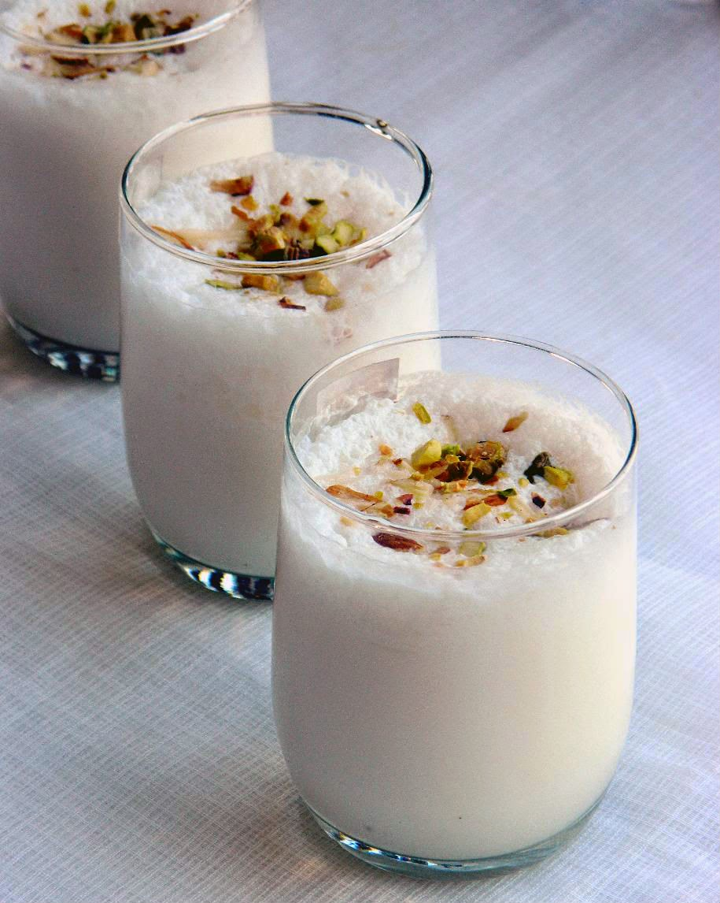

Lassi

Lassi is a yogurt based drink that can be prepared both sweet and sour according to personal preference. In this article, a recipe for sweet mango lassi will be listed. The recipe needed for this drink is listed below:
- Yogurt
- Sliced Mango
- Ice Cubes
- Cardamom seeds or powder to taste
Additionaly you will need a food mixer.
Instructions
- Inside a food mixer pour 1 and half cups of yogurt
- Dice the mango into cubes and add it to the yogurt
- Now add ice cubes to this mixture
- Blend the mixture till it is smooth
- Add Cardamom seeds of powder to taste